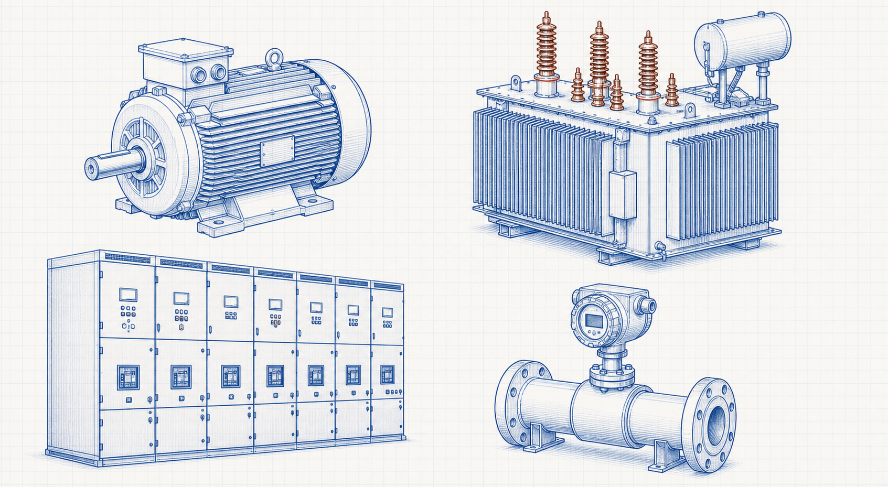

Motors
Induction motors, their stators, rotors, bearings and principal industrial components.
Equipment category IndustrialCalculation HubSearch topics, tools, articles...
IndustrialCalculation HubSearch topics, tools, articles...Level 2 equipment family
Explore the machines, power equipment, switchgear and field devices that provide plant power, protection and measurement.

Explore by category
Induction motors, their stators, rotors, bearings and principal industrial components.
Equipment categoryPower-transformer cores, windings, bushings and equipment-component fundamentals.
Equipment categoryCircuit breakers, relays, panels and the components of industrial switchgear systems.
Equipment categoryFlow measurement primary elements, transmitters, indicators and instrument components.
Equipment category